DFlash：用于极速 speculative decoding 的块扩散
Jian Chen1 Yesheng Liang1 Zhijian Liu1
摘要
自回归大语言模型（LLM）性能强大，但 decoding 本质上必须按顺序进行，导致高推理延迟和低 GPU 利用率。Speculative decoding 使用快速草稿模型，其输出由目标 LLM 并行验证，从而缓解这一瓶颈。然而，现有方法仍依赖自回归草稿生成，过程依然串行，限制了实际加速。扩散 LLM 能够并行生成，是一个有希望的替代方案，但当前扩散模型性能通常不及自回归模型。本文提出 DFlash，一种采用轻量块扩散模型并行生成草稿的 speculative decoding 框架。我们表明，speculative decoding 为扩散模型提供了自然、有效的应用场景。DFlash 在一次前向计算中生成草稿 token，实现高效草稿生成；通过以目标模型提取的上下文特征为条件，生成高质量草稿并获得更高接受率。实验表明，DFlash 在一系列模型与任务上实现超过 6 倍无损加速，加速比最高比先进的 speculative decoding 方法 EAGLE-3 高 2.5 倍。
链接：代码（GitHub） | 模型（Hugging Face）
1. 引言
大语言模型（LLM）支持了大量强大应用，包括对话 agent（Yang et al., 2025; Guo et al., 2025）和自动编程工具。尽管取得成功，LLM 推理仍以按顺序逐 token 生成的过程为主，每个输出都依赖此前的完整上下文。这种固有串行性造成主要性能瓶颈：推理慢、受内存带宽限制，无法充分利用现代 GPU。随着长 chain-of-thought（CoT）推理模型（OpenAI et al., 2024; Guo et al., 2025）出现，该瓶颈越来越关键，因为漫长推理时间如今主导生成过程。
Speculative decoding（Leviathan et al., 2023; Li et al., 2025c; 2024; 2025b; Cai et al., 2024）已成为解决这一瓶颈的主要方案。该范式采用轻量草稿模型推测未来 token 序列，再由大型目标模型并行验证。虽然该方法实现无损加速，已广泛整合到生产框架，EAGLE-3（Li et al., 2025b）等最先进方法仍依赖自回归生成草稿。这种串行草稿过程不仅本质上低效，还易受误差积累影响，实际上将可实现的加速比限制在约 2–3 倍。
近期，扩散 LLM（dLLM）（Nie et al., 2025）能够并行生成文本、双向建模上下文，为自回归 LLM 提供了有希望的替代方案。块扩散模型（Arriola et al., 2025; Cheng et al., 2025; Wu et al., 2025）可同时对一块被遮蔽的 token 去噪。然而，当前开源 dLLM 的生成质量通常低于自回归模型。此外，要保持可接受的输出质量，往往需要大量去噪步骤，显著削弱其原始推理速度（Qian et al., 2026）。
这揭示了一项关键权衡：自回归模型性能更好，但存在顺序生成延迟；扩散模型能够快速并行生成，却往往以准确性为代价。一个自然的研究问题是：能否结合两种范式的优势，同时缓解各自弱点？一种有吸引力的方案是利用扩散模型高速并行生成草稿，再依靠高质量自回归模型验证，确保最终输出无损。
1加利福尼亚大学圣迭戈分校。通讯作者：Zhijian Liu <zhijian@ucsd.edu>。
载于第 43 届国际机器学习大会论文集，韩国首尔。PMLR 306，2026。版权 ©2026 作者所有。
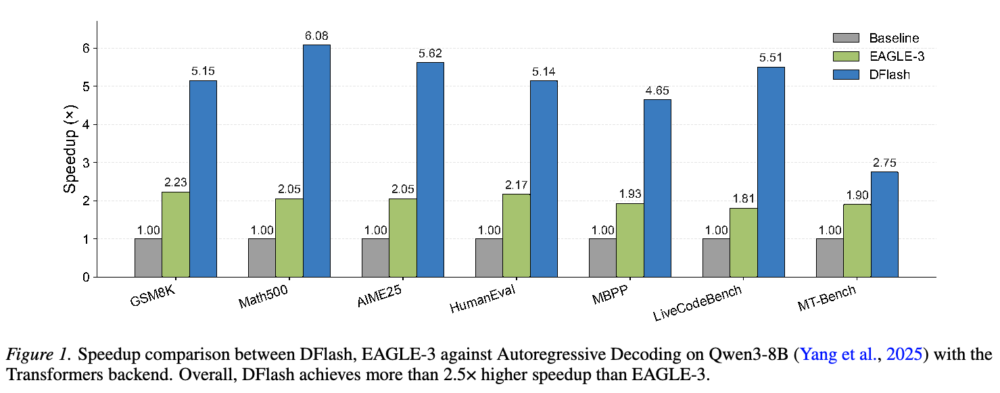
然而，用扩散生成草稿并不简单，现有方法要么不实用，要么加速有限。DiffuSpec（Li et al., 2025a）和 SpecDiff-2（Sandler et al., 2025）采用巨大草稿模型，例如 7B 参数。这么大的内存占用对于现实服务往往过于昂贵。此外，这些大型草稿器虽然提供较高质量的草稿 token 和较长接受长度，但草稿延迟高，实际加速比仅约 3–4 倍。相比之下，PARD（An et al., 2025）训练小型自回归模型模仿扩散式并行生成，再为目标 LLM 执行 speculative decoding。然而，得到的小模型不具备目标 LLM 的建模能力，接受长度受限，加速比上限约为 3 倍。
难道真的“没有免费的午餐”？能否构建同时轻量而高度准确的扩散草稿器？
本文提出 DFlash，一种使用轻量块扩散模型、实现快速且高质量草稿生成的 speculative decoding 框架。我们的关键认识很简单：目标模型最了解自身。Samragh et al.（2025）观察到，大型自回归 LLM 的隐藏特征隐含包含多个未来 token 的信息。DFlash 将这些隐藏特征作为上下文，以此为条件，让草稿模型并行预测未来 token 块。事实上，草稿模型成为扩散 adapter，高效利用大型目标模型建模的深层上下文特征。DFlash 不要求微型草稿模型从零开始推理，而是将目标模型的推理能力，与小型扩散草稿器的并行生成速度融合。
我们在广泛模型和基准上评估 DFlash，并使用 SGLang（Zheng et al., 2024），展示其在现实服务设置下的实际收益。如图 1 所示，DFlash 在 Qwen3-8B（Yang et al., 2025）上最高达到 6.1 倍加速，在大多数基准上比先进的 EAGLE-3 快近 2.5 倍。我们认为，DFlash 为加速 LLM 推理、普及高性能 AI 迈出了重要一步。
利益冲突披露。作者声明不存在与本工作相关的财务利益冲突。研究支持与计算资源已在致谢部分说明。
2. 相关工作
2.1. Speculative Decoding
Speculative decoding 通过缓解自回归生成的顺序瓶颈来加速 LLM 推理。早期方法（Leviathan et al., 2023）使用较小的草稿模型提出 token 序列，由较大的目标模型并行验证。Medusa（Cai et al., 2024）为基础 LLM 增加多个预测头，用 tree attention 并行验证，从而不再需要外部草稿模型。EAGLE 系列（Li et al., 2025c; 2024; 2025b）进一步利用冻结目标模型的特征级上下文，改进 speculative decoding。EAGLE-1 预测未来隐藏状态分布，提高接受率；EAGLE-2 引入自适应草稿树；EAGLE-3 改进训练目标，使加速效果可随规模扩展。
尽管取得这些进展，大多数现有方法仍依赖本质上串行的自回归草稿生成，限制了加速比。
2.2. 扩散语言模型
扩散大语言模型（dLLM）通过并行预测被遮蔽 token，为自回归生成提供替代方案。（本句原文跨页，已接续。）
LLaDA（Nie et al., 2025）首次将 dLLM 扩展至数十亿参数，实现与 LLaMA-3.1-8B（Grattafiori et al., 2024）相当的性能。然而，全并行扩散模型受限于固定长度生成，且缺乏高效 KV cache 支持。块扩散模型（Arriola et al., 2025）通过逐块对序列去噪，将并行性与自回归结构结合，解决这些问题。在此基础上，Fast-dLLM v2（Wu et al., 2025）和 SDAR（Cheng et al., 2025）将预训练自回归 LLM 改造为块扩散变体，在特定任务上保持生成质量，同时实现并行生成。尽管如此，现有 dLLM 总体仍不及先进自回归模型，往往需要大量去噪步骤，限制了实际推理速度。
2.3. 基于扩散的 Speculative Decoding
近期工作探索在 speculative decoding 中将扩散模型用作草稿器。TiDAR（Liu et al., 2025）联合训练扩散与自回归目标，通过扩散实现并行“思考”，通过自回归 decoding 实现顺序“表达”，但最终生成质量尚非无损。
其他方案改造自回归模型，以扩散式方式生成草稿。Samragh et al.（2025）发现，自回归 LLM 隐含编码未来 token 信息，并训练 LoRA adapter 实现并行草稿生成，同时保留基础模型用于验证。
DiffuSpec（Li et al., 2025a）和 SpecDiff-2（Sandler et al., 2025）使用大型预训练 dLLM 作为推测草稿器，通过推理时搜索或训练—测试对齐改善接受率。然而，这些方法依赖巨大草稿器，例如 7B 参数，带来大量内存和延迟开销。虽然接受长度较长，但草稿成本高，往往抵消现实服务场景中的实际加速收益。
3. 预备知识
本节形式化 speculative decoding 的加速机制，阐明自回归与扩散草稿生成之间的效率权衡。分析表明，扩散草稿器为何具备同时实现低草稿延迟和高接受率的独特优势。
3.1. Speculative Decoding 加速
Speculative decoding 使用较小的草稿模型 \(\mathcal M_d\)，加速目标模型 \(\mathcal M_t\) 的推理。在每个 decoding 周期中，草稿模型提出 \(\gamma\) 个 token，由目标模型并行验证。
遵循 Sadhukhan et al.（2025），平均每 token 延迟为
\[L=\frac{T_{\mathrm{draft}}+T_{\mathrm{verify}}}{\tau},\tag{1}\]
其中，\(T_{\mathrm{draft}}\) 是生成草稿 token 的时间，\(T_{\mathrm{verify}}\) 是验证成本，\(\tau\in[1,\gamma+1]\) 为每周期接受的 token 数期望，包含目标模型产生的额外 token。令 \(L_{\mathrm{target}}\) 为 \(\mathcal M_t\) 自回归生成的每 token 延迟，则加速比为 \(\eta=L_{\mathrm{target}}/L\)。
该表达式明确体现了权衡：提高期望接受长度 \(\tau\)，或降低草稿开销 \(T_{\mathrm{draft}}\)，都能改善加速比。
3.2. 自回归与扩散草稿生成
自回归草稿器按顺序生成 token，草稿成本为
\[T_{\mathrm{draft}}=\gamma\cdot t_{\mathrm{step}},\tag{2}\]
其中，\(t_{\mathrm{step}}\) 为一次前向计算的延迟。因此，草稿成本随推测预算 \(\gamma\) 线性增长。
为控制延迟，自回归草稿器只能采用很浅的架构，例如 EAGLE-3 的单个 transformer 层。这严重限制草稿质量：增大 \(\gamma\) 虽提高草稿成本，但有限模型容量使接受长度 \(\tau\) 很快饱和。实践中，这种不平衡限制了可实现的加速比。
扩散草稿器在单次前向计算内并行生成全部 \(\gamma\) 个 token，因此
\[T_{\mathrm{draft}}=t_{\mathrm{parallel}},\tag{3}\]
其中，\(t_{\mathrm{parallel}}\) 表示块生成延迟。现代 GPU 执行此类并行操作远比多次顺序前向计算高效，因此对于规模相当的模型，\(t_{\mathrm{parallel}}\ll\gamma\cdot t_{\mathrm{step}}\)。在适中的块大小下，\(T_{\mathrm{draft}}\) 因而对 \(\gamma\) 基本不敏感。
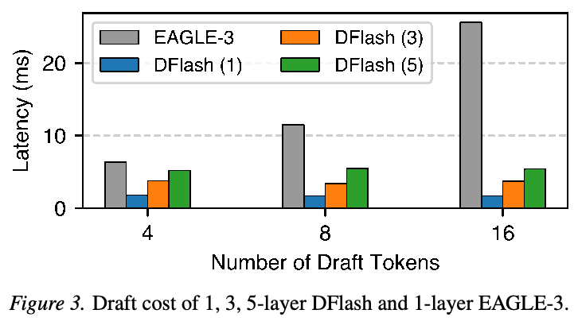
这种并行性从根本上改变了设计空间。由于草稿成本不再随生成 token 数量增长，扩散草稿器能够采用更深、表达能力更强的架构，而不牺牲延迟。（本句原文跨页，已接续。）
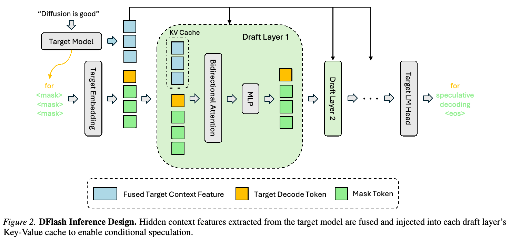
（本页开头关于更深扩散草稿器的跨页句已接续至第 3 页。）模型容量增加，显著改善草稿质量和接受长度。实证表明，生成 16 个 token 的五层 DFlash 草稿模型，相比生成 8 个 token 的 EAGLE-3，延迟更低（图 3）、接受长度更高，在草稿质量与成本之间具有更有利的 Pareto 前沿。
4. 方法
4.1. 推理
图 2 展示 DFlash 的系统设计。本节解释关键设计选择，说明 DFlash 如何用非常小而高效的草稿模型获得很长的草稿接受长度。
目标模型的上下文特征。An et al.（2025）等先前工作直接使用小型扩散模型作为推测草稿器，导致接受长度短、加速有限。为验证这一点，我们训练了不使用任何目标模型条件信息的五层块扩散草稿模型，并在多个数学基准上评估。如表 10 所示，加速比较低，通常约 2–3 倍。这一局限源自缺乏丰富上下文指导：无法访问目标模型的内部表示时，扩散草稿器实际上必须从零开始预测未来 token。
相比之下，大型自回归目标模型的隐藏表示，编码的信息远超 token 层面的 logits。这些特征捕获长程依赖和任务相关语义；更关键的是，它们隐含编码了未来 token 预测信息，Samragh et al.（2025）也有类似观察。
在 DFlash 中，给定输入提示，目标模型先执行标准 prefill，生成第一个 token。在此过程中，我们从由浅到深均匀选取的固定层集合提取隐藏表示。拼接这些隐藏状态，并通过轻量投影层，将跨层信息融合为紧凑的目标上下文特征，用以对草稿模型提供条件。
通过 KV 注入提供条件，使接受长度可随规模扩展。EAGLE-3 等现有方法也使用目标模型隐藏特征，但将这些特征与草稿模型 token embeddings 融合，只作为草稿模型输入。随着草稿模型加深，来自目标模型的信息越来越稀释，因此增加草稿层时，接受长度的收益逐渐递减。
DFlash 采用根本不同的策略。我们将融合的目标上下文特征视为持久上下文信息，直接注入每个草稿模型层的 Key 和 Value 投影。投影后特征保存在草稿模型的 KV cache 中，在草稿迭代间复用。第 A.3 节提供更多 KV 注入机制细节。这种设计在草稿模型全程提供强而一致的条件，使接受长度能够随草稿层数有效增长。第 5.5.2 节进一步分析这一行为。
并行扩散草稿生成。DFlash 速度的另一个关键来源是低草稿延迟。自回归草稿模型必须执行多次顺序前向计算，生成草稿 token 或树，限制并行性，使 GPU 利用低效。（本句原文跨页，已接续。）
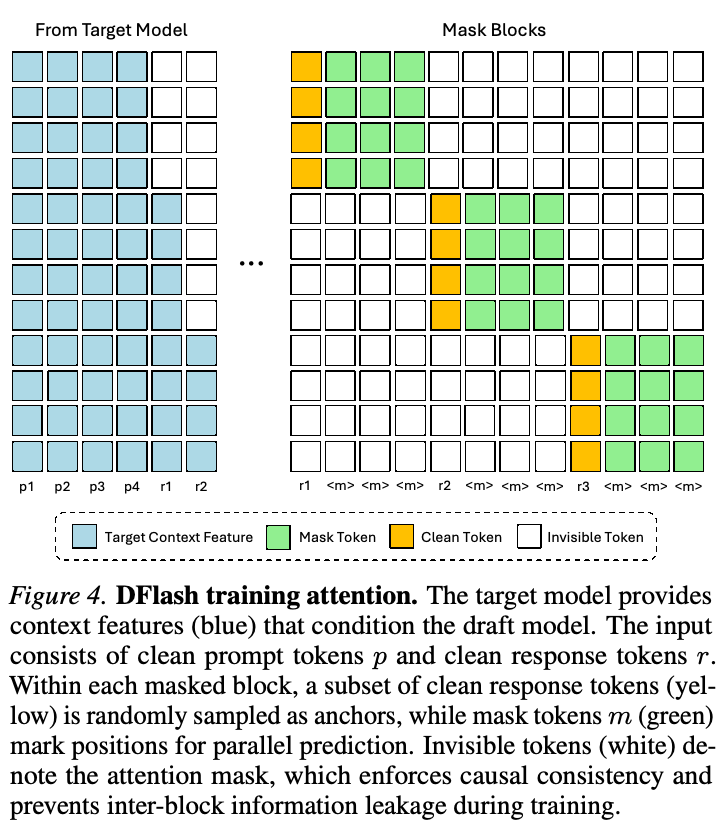
（本页开头关于自回归草稿模型串行前向计算的跨页句已接续至第 4 页。）相比之下，DFlash 通过块级扩散过程预测下一 token 块。一个块内所有被遮蔽位置，在一次前向计算中并行 decoding。相比自回归草稿生成，这种分块并行生成显著降低草稿延迟，提高硬件利用率，即便采用更深的草稿模型也是如此。
总体而言，DFlash 将基于扩散的并行草稿生成，与来自目标模型的紧密条件耦合结合，在大幅降低草稿延迟的同时，实现高质量草稿生成。
4.2. 训练
DFlash 草稿模型的训练，使块级扩散预测与冻结自回归目标模型的输出对齐。我们不直接采用标准块扩散训练（Arriola et al., 2025），而引入若干关键修改，提高训练效率、可扩展性，以及与推理阶段 speculative decoding 行为的一致性。
KV 注入。遵循推理流程，给定由提示与响应组成的序列，先将完整干净序列送入目标模型，提取并融合所有 token 的隐藏特征。随后，如图 4 所示，将隐藏特征以 Key 和 Value 投影形式注入草稿模型。
随机采样遮蔽块。在标准块扩散训练中，响应被均匀划分为块，随机遮蔽每块中的部分位置，训练模型为被遮蔽 token 去噪。
DFlash 则针对 speculative decoding 场景定制块构造方式。我们从响应中随机采样锚点 token，将每个锚点作为块的第一个位置，遮蔽其余位置。训练草稿模型并行预测接下来的 \(\mathrm{block\_size}-1\) 个 token。这直接匹配推理行为：草稿模型总是以目标模型生成的干净 token 为条件，即上一验证步骤的额外 token。随机化锚点位置，还使草稿模型接触更多样的目标上下文特征，提高数据效率与覆盖率。如表 13 所示，这项策略显著改善接受长度和加速比。
训练期间，将全部块拼接为单个序列，使用图 4 所示稀疏 attention mask 联合处理。token 可双向关注同一块内的 token，以及对应注入的目标上下文特征；不同块之间不允许 attention。这一设计借助 Flex Attention（Dong et al., 2024），在一次前向与反向计算中高效训练多个草稿块。
高效长上下文训练。对于 EAGLE-3 等方法，由于训练时测试开销高，在长上下文上训练推测草稿模型很有挑战。DFlash 固定每序列的遮蔽块数量，并在每个 epoch 为各序列随机采样锚点位置，实现高效长上下文训练。这种策略在保持训练成本有界的同时，提供有效的数据增强。
通过损失加权加快收敛。在 speculative decoding 中，并非所有 token 都同等重要。草稿块早期位置出错，会使所有后续 token 失效。因此，早期预测对接受长度的影响格外大。训练时，我们通过加权交叉熵损失，强调更靠前的 token 位置，体现这一不对称性。
具体而言，对于块内第 \(k\) 个位置的 token，采用指数衰减权重
\[w_k=\exp\!\left(-\frac{k-1}{\gamma}\right),\tag{4}\]
其中，\(\gamma\) 控制衰减率。这种加权优先考虑较早位置，比均匀加权收敛更快、接受长度更高（图 5）。
共享 embedding 和 LM head。为提高训练效率，草稿模型与目标模型共享 token embedding 层和语言建模头，并在训练期间冻结它们。（本句原文跨页，已接续。）
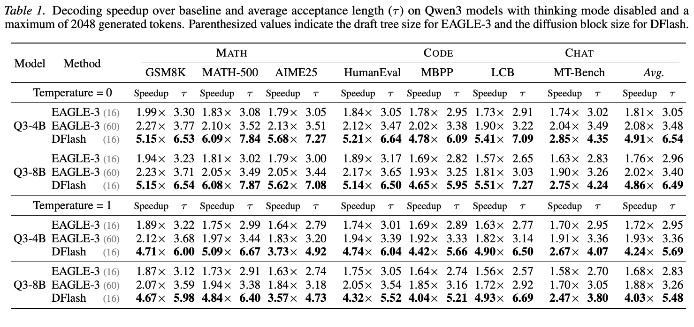
（本页开头关于冻结共享 embedding 与 LM head 的跨页句已接续至第 5 页。）仅更新草稿 Transformer 层。这一设计减少可训练参数量，促使草稿模型成为与目标模型表示空间紧密对齐的轻量扩散 adapter。
5. 实验
模型与评估。我们在 LLaMA-3.1 Instruct（8B）和 Qwen3（4B、8B、Coder-30B-A3B-Instruct）预训练模型上开展实验。评估任务分三类：数学：GSM8K（Cobbe et al., 2021）、MATH（Lightman et al., 2023）和 AIME25（MAA, 2025）；代码：HumanEval（Chen, 2021）、MBPP（Austin et al., 2021）和 LiveCodeBench（Jain et al., 2024）；聊天：MT-Bench（Zheng et al., 2023）和 Alpaca（Taori et al., 2023）。对于各项任务，采用平均接受长度 \(\tau\) 和相对自回归基线的端到端 decoding 加速比，评估草稿模型性能。除非另有说明，全部实验在 NVIDIA H200 GPU 上进行。
数据集。为提供多样训练数据，我们从 NVIDIA Nemotron Post-Training Dataset V2（Nathawani et al., 2025）和 CodeAlpaca（Chaudhary, 2023）收集约 800K 样本，形成混合数据。我们不直接使用原始数据集，而是以目标模型生成的响应构建训练集，以更好地与目标模型对齐。
实现。DFlash 草稿模型层数设为 5（Qwen3 Coder 为 8），块大小设为 16（LLaMA 3.1 为 10）。目标隐藏特征来自目标模型第二层至倒数第三层之间均匀选取的 5 层。更多训练细节见第 A.1 节。
基线。我们将 DFlash 与常规自回归 decoding（基线），以及先进的 speculative decoding 方法 EAGLE-3（Li et al., 2025b）比较。其他基于 dLLM 的 speculative decoding 方法（Liu et al., 2025; Samragh et al., 2025; Li et al., 2025a; Sandler et al., 2025）缺乏开源实现，因此不纳入比较。Qwen3 模型上的 EAGLE-3 比较（第 5.1 节）使用 AngelSlim（Tencent, 2025）发布的 checkpoint；LLaMA-3.1-Instruct 的比较（第 5.5.1 节）使用 EAGLE-3 团队发布的官方 checkpoint。
5.1. 指令模型
本节使用 Transformers 后端，在关闭 thinking mode 的 Qwen3 模型上比较 DFlash 与 EAGLE-3。EAGLE-3 考虑两种设置：树大小 16，与块大小为 16 的 DFlash 匹配，公平比较草稿预算；树大小 60，与 EAGLE-3 论文相同，以较高验证成本最大化接受长度。两种设置的草稿步数和 Top-k 分别设为 7 和 10。
如表 1 所示，在全部任务和设置中，DFlash 始终优于 EAGLE-3。贪心 decoding（temperature=0）下，相对自回归基线，DFlash 平均加速 4.9 倍，相对 EAGLE-3（16）提升 2.4 倍。非贪心采样（temperature=1）下，DFlash 相对基线仍加速 4.1 倍，相对 EAGLE-3 提升 2.2 倍。DFlash 还超越树大小为 60 的 EAGLE-3，在显著降低验证开销的同时，获得更长接受长度。这些结果证明，DFlash 的扩散草稿生成有效且高效。（本句原文跨页，已接续。）
（本页开头关于有效性与效率的跨页句已接续至第 6 页。）
5.2. 推理模型
本节使用 Transformers，在开启 thinking mode 的 Qwen3 模型上评估 DFlash。草稿模型在包含推理轨迹的目标模型输出上训练。如表 2 所示，DFlash 保持较长接受长度，相对基线实现约 4.5 倍和 3.9 倍加速。考虑到推理模型生成时间长，这一效率收益对其实际部署尤为有价值。
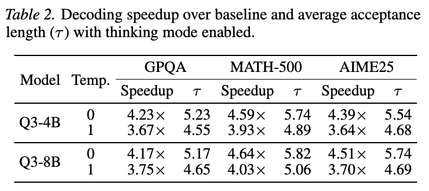
5.3. 服务框架上的性能
本节使用 Qwen3-4B、Qwen3-8B 和 Qwen3-Coder-30B-A3B-Instruct，在流行的开源推理框架 SGLang 上评估 DFlash。所有实验采用 FlashAttention-4（FA4）后端，在单块 B200 GPU 上开展。我们开启 Spec-v2 调度重叠，最大化可实现吞吐量。
如表 3 所示，在并发数 1 至 32 的范围内，DFlash 对三个模型始终提供加速，在 Qwen3-8B 上最高加速 5.1 倍。这些结果证明，DFlash 在现实服务场景中具有实际价值，能够显著降低服务成本。
更多模型及 vLLM（Kwon et al., 2023）上的 DFlash 加速结果见第 A.4 节。
5.4. 长上下文适配
本节展示，在 4K 上下文上训练的基础 DFlash 草稿模型，只需很少微调即可适应更长上下文。我们使用 LongAlign-10K（Bai et al., 2024a）的 1.6K 样本，对基础 Qwen3.5-27B 草稿模型微调 3 个 epoch，并在 LongBench（Bai et al., 2024b）的多个数据集上测试。
如表 4 所示，当上下文超过 4K 时，基础 DFlash 草稿模型性能下降，而微调模型保持甚至提高了接受长度。这说明，提取的目标特征在长上下文下仍具有代表性，草稿模型通过轻量适配即可学习更长程的模式。
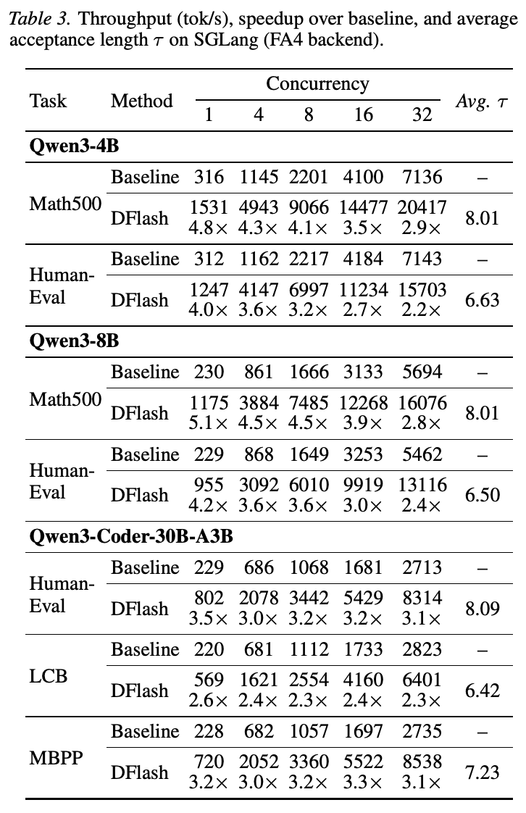
5.5. 消融研究
本节消融训练数据和 DFlash 草稿模型若干关键设计选择的影响。除非另有说明，全部消融模型使用从完整混合数据中随机抽取的 100K 样本训练。除在 SGLang 上评估的实验外，全部实验采用贪心 decoding，在单块 H200 GPU 上进行。
5.5.1. 训练数据
我们在 LLaMA-3.1-8B-Instruct 上比较 DFlash 与 EAGLE-3。DFlash 使用 UltraChat（Ding et al., 2023）和 ShareGPT 训练，与 EAGLE-3 的训练数据完全相同，并与官方 EAGLE-3 checkpoint 比较。DFlash 草稿模型块大小为 10，其余配置与 DFlash Qwen3-8B 草稿模型相同。全部实验使用 SGLang 的 Spec-v1（不启用调度重叠），因为 Spec-v2 不支持 EAGLE-3 的树形草稿生成。评估在单块 B200 GPU 上进行。（本段原文跨页，已接续。）
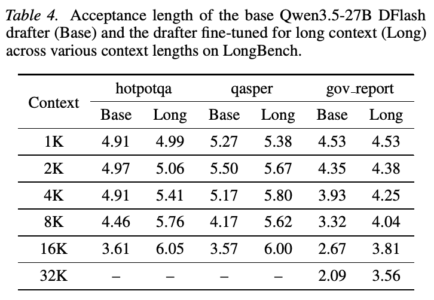
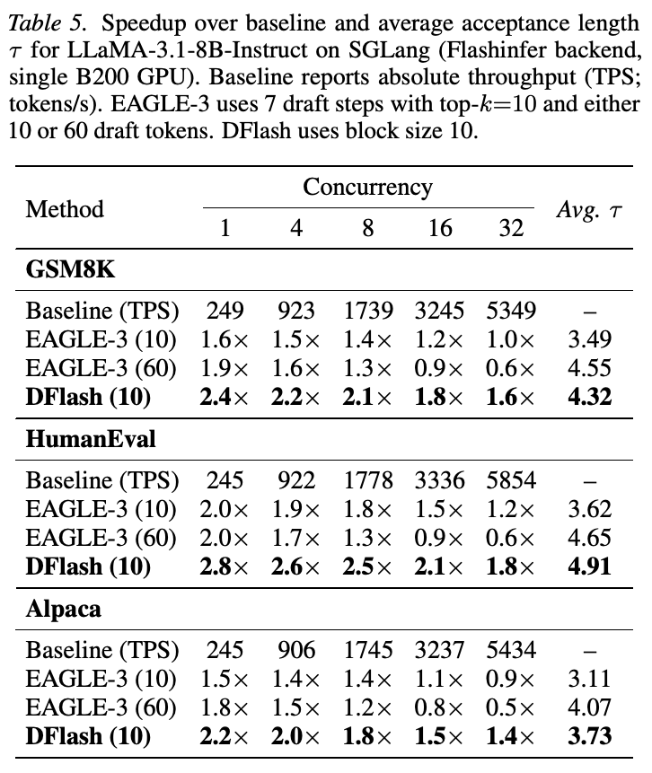
（本页关于 Spec-v2 与单块 B200 评估的跨页内容已接续至第 7 页。）
如表 5 所示，在全部任务、并发数和 EAGLE-3 树大小配置下，DFlash 始终优于 EAGLE-3。该性能差距同时存在于数学、代码和聊天基准，证明相比基于自回归树的 speculative decoding，DFlash 更鲁棒、更高效。
5.5.2. 草稿层数
DFlash 的一个优势是接受长度能够随草稿模型深度有效增长。然而，草稿成本和质量之间存在权衡。更深的草稿模型表达能力更强，接受长度更高，但草稿延迟也更高。因此，最优层数取决于部署设置。如表 6 所示，8 层草稿模型的接受长度更长，但 5 层模型在草稿成本与质量之间平衡更好，总体加速比更高。
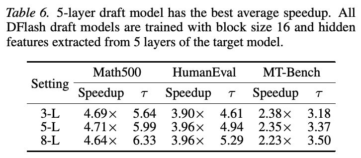
5.5.3. 目标隐藏特征数量
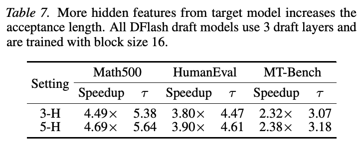
目标隐藏特征数量同时影响接受长度和端到端加速比。从更多目标层提取特征，提供更丰富的语义和未来 token 信息，改善草稿质量。如表 7 所示，以五组隐藏特征为条件，始终优于仅使用三组。但这一收益伴随更高训练成本：离线训练中，缓存目标隐藏状态所需的存储，随提取特征数量线性增加。
5.5.4. 训练与推理时的块大小
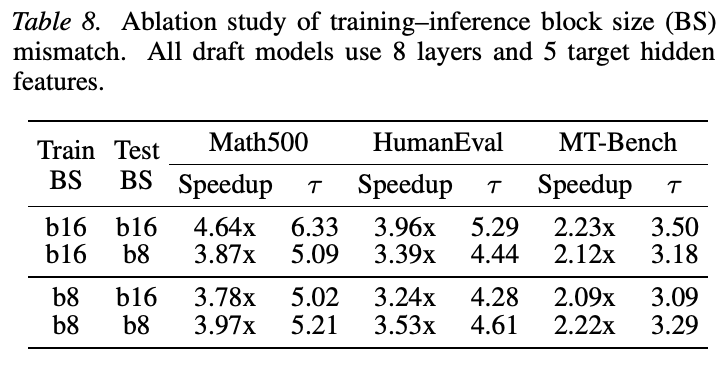
块大小是 DFlash 草稿模型的关键设计选择。同样重要的问题是：预训练 DFlash 模型能否从训练时的块大小，泛化到推理时不同的块大小？为研究这一问题，我们在相同数据上训练块大小分别为 8 和 16 的两个草稿模型，并评估其推理时扩展行为，如表 8 所示。（本句原文跨页，已接续。）
（本页开头关于不同块大小模型的跨页句已接续至第 8 页。）
训练和推理块大小匹配时（8→8 和 16→16），块大小为 16 的模型在数学和代码任务上取得显著更高的接受长度。Math500 的接受长度直方图表明，块大小为 8 的模型经常接受整块（35.7%），说明大小 8 往往未能充分发挥可接受范围。相比之下，块大小 16 的模型具有更分散的接受分布、更高的平均接受长度，表明较大的块得到了更有效利用。
我们进一步考察推理阶段跨块大小泛化，观察到明显不对称性。以较大块训练的模型，可以良好泛化到较小推理块：以块大小 16 训练、推理用 8 时，接受长度接近训练和评估都用 8 的模型。但反向情况不成立。
总体而言，以较大块训练的 DFlash 模型能够良好泛化到较小推理块。这使推理时动态调度块大小、改善端到端效率成为可能。在实际服务中，受计算限制的设置（例如大 batch size）下，大块会增加验证成本，此时减小块大小可获得更好的总体加速。自适应块大小调度留待未来工作。
5.5.5. KV 注入与输入融合
本项消融研究目标特征应像 EAGLE-3 式输入融合那样，仅在输入层注入一次，还是以 KV 条目形式注入每个草稿层。我们在自回归和块扩散草稿生成两种情况下，比较这两种条件策略。结果见表 9。
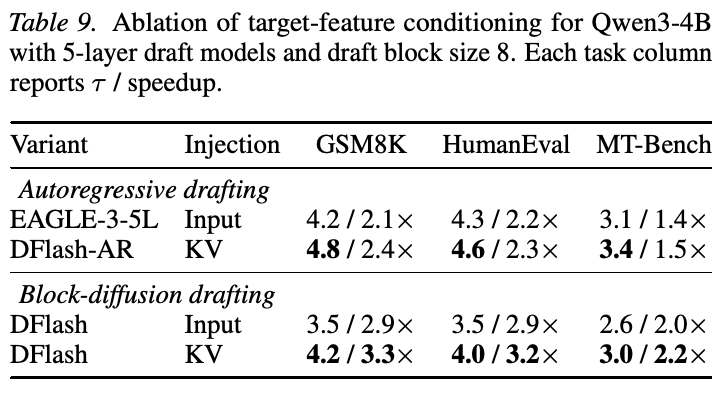
结果显示，KV 注入比输入融合更有效。在自回归草稿生成中，DFlash-AR 在所有任务上的接受长度都高于 EAGLE-3-5L。在块扩散草稿生成中，相比输入融合，KV 注入的 DFlash 在所有任务上也提高接受长度。这表明，通过 KV 条目使每个草稿层都接触目标特征，比只在输入层注入特征更有效。
DFlash 接受长度与 EAGLE-3-5L 相当，但块扩散并行生成多个 token，因此加速比高得多。所以，DFlash 同时受益于 KV 注入提供的更强条件，以及更快速的并行草稿生成。
6. 结论
本文提出 DFlash，一个基于扩散的 speculative decoding 框架，重新思考扩散语言模型在加速自回归 LLM 推理中的角色。通过将扩散模型限定在草稿阶段，DFlash 利用其固有并行性，同时避免限制扩散模型独立使用的质量下降问题。以丰富的目标模型上下文为条件，扩散草稿器获得较高接受率，使 DFlash 的推理速度显著超越以往 speculative decoding 方法。
除实证改善外，DFlash 为扩散 LLM 提出一种新的发展范式。扩散模型无需在端到端生成质量上与自回归模型竞争，而可以成为轻量、专门化的草稿器，针对快速而准确的块预测优化。这种重新定位允许大幅减少去噪步骤，最大化并行性，同时由推测验证提供有原理保证的输出质量。我们希望 DFlash 将基于扩散的草稿生成确立为实用、可扩展的 speculative decoding 范式，推动更高效、更易获取的 LLM 部署。
致谢
作者诚挚感谢 David Wang 领导 DFlash 快速、高质量的 SGLang 集成，也感谢 Richard Gong 与 Modal 团队其他成员提供强有力的工程支持。他们的努力对于 DFlash 实际生产级部署至关重要。
感谢 Qualcomm 和 Amazon 支持本研究，也感谢 Modal、Yotta Labs、Eigen AI 和 InnoMatrix 提供使本工作得以开展的计算资源。
影响声明
本文旨在通过改进 speculative decoding 提升 LLM 推理效率。所提方法主要是系统和算法层面的优化，降低 LLM 推理与服务成本，不改变模型能力或预期用途。（本句原文跨页，已接续。）
（本页开头关于成本及用途的跨页句已接续至第 9 页。）我们预计不会出现超出大语言模型通常已有风险的重大新伦理风险。因此，潜在社会影响与现有 LLM 部署一致，既包含其益处，也包含已知局限。
参考文献
Agarwal, S., Ahmad, L., Ai, J., Altman, S., Applebaum, A., Arbus, E., Arora, R. K., Bai, Y., Baker, B., Bao, H., et al. gpt-oss-120b 与 gpt-oss-20b 模型卡。arXiv preprint arXiv:2508.10925, 2025. 12
An, Z., Bai, H., Liu, Z., Li, D., and Barsoum, E. PARD：通过低成本并行草稿模型适配加速 LLM 推理，2025。URL https://arxiv.org/abs/2504.18583. 2, 4
Arriola, M., Gokaslan, A., Chiu, J. T., Yang, Z., Qi, Z., Han, J., Sahoo, S. S., and Kuleshov, V. 块扩散：在自回归与扩散语言模型之间插值，2025。URL https://arxiv.org/abs/2503.09573. 1, 3, 5
Austin, J., Odena, A., Nye, M., Bosma, M., Michalewski, H., Dohan, D., Jiang, E., Cai, C., Terry, M., Le, Q., et al. 使用大语言模型进行程序合成。arXiv preprint arXiv:2108.07732, 2021. 6
Bai, Y., Lv, X., Zhang, J., He, Y., Qi, J., Hou, L., Tang, J., Dong, Y., and Li, J. LongAlign：大语言模型的长上下文对齐方案。载于 Findings of the Association for Computational Linguistics: EMNLP 2024, pp. 1376–1395, 2024a. 7
Bai, Y., Lv, X., Zhang, J., Lyu, H., Tang, J., Huang, Z., Du, Z., Liu, X., Zeng, A., Hou, L., et al. LongBench：用于长上下文理解的双语多任务基准。载于 Proceedings of the 62nd Annual Meeting of the Association for Computational Linguistics (Volume 1: Long Papers), pp. 3119–3137, 2024b. 7
Cai, T., Li, Y., Geng, Z., Peng, H., Lee, J. D., Chen, D., and Dao, T. Medusa：采用多个 decoding 头的简单 LLM 推理加速框架，2024。URL https://arxiv.org/abs/2401.10774. 1, 2
Chaudhary, S. Code Alpaca：用于代码生成的指令遵循 LLaMA 模型。https://github.com/sahil280114/codealpaca, 2023. 6
Chen, M. 评估在代码上训练的大语言模型。arXiv preprint arXiv:2107.03374, 2021. 6
Cheng, S., Bian, Y., Liu, D., Zhang, L., Yao, Q., Tian, Z., Wang, W., Guo, Q., Chen, K., Qi, B., and Zhou, B. SDAR：用于可扩展序列生成的扩散—自回归协同范式，2025。URL https://arxiv.org/abs/2510.06303. 1, 3
Cobbe, K., Kosaraju, V., Bavarian, M., Chen, M., Jun, H., Kaiser, L., Plappert, M., Tworek, J., Hilton, J., Nakano, R., et al. 训练验证器求解数学文字题。arXiv preprint arXiv:2110.14168, 2021. 6
Ding, N., Chen, Y., Xu, B., Qin, Y., Zheng, Z., Hu, S., Liu, Z., Sun, M., and Zhou, B. 通过扩大高质量指令对话规模增强聊天语言模型，2023。URL https://arxiv.org/abs/2305.14233. 7
Dong, J., Feng, B., Guessous, D., Liang, Y., and He, H. Flex Attention：生成优化 attention 内核的编程模型，2024。URL https://arxiv.org/abs/2412.05496. 5
Grattafiori, A., Dubey, A., Jauhri, A., Pandey, A., Kadian, A., Al-Dahle, A., Letman, A., Mathur, A., Schelten, A., Vaughan, A., et al. LLaMA 3 模型群，2024。URL https://arxiv.org/abs/2407.21783. 3
Guo, D., Yang, D., Zhang, H., Song, J., Wang, P., Zhu, Q., Xu, R., Zhang, R., Ma, S., Bi, X., et al. DeepSeek-R1 通过强化学习激励 LLM 推理。Nature, 645(8081):633–638, September 2025. ISSN 1476-4687. doi: 10.1038/s41586-025-09422-z. URL http://dx.doi.org/10.1038/s41586-025-09422-z. 1
Jain, N., Han, K., Gu, A., Li, W.-D., Yan, F., Zhang, T., Wang, S., Solar-Lezama, A., Sen, K., and Stoica, I. LiveCodeBench：对大语言模型代码能力的全面、无污染评估。arXiv preprint arXiv:2403.07974, 2024. 6
Kwon, W., Li, Z., Zhuang, S., Sheng, Y., Zheng, L., Yu, C. H., Gonzalez, J., Zhang, H., and Stoica, I. 通过 PagedAttention 高效管理大语言模型服务的内存。载于 Proceedings of the 29th Symposium on Operating Systems Principles, pp. 611–626, 2023. 7
Leviathan, Y., Kalman, M., and Matias, Y. 通过 speculative decoding 实现 transformer 快速推理，2023。URL https://arxiv.org/abs/2211.17192. 1, 2
Li, G., Fu, Z., Fang, M., Zhao, Q., Tang, M., Yuan, C., and Wang, J. DiffuSpec：释放扩散语言模型用于 speculative decoding 的能力，2025a。URL https://arxiv.org/abs/2510.02358. 2, 3, 6
Li, Y., Wei, F., Zhang, C., and Zhang, H. EAGLE-2：通过动态草稿树加速语言模型推理，2024。URL https://arxiv.org/abs/2406.16858. 1, 2
Li, Y., Wei, F., Zhang, C., and Zhang, H. EAGLE-3：通过训练时测试扩展大语言模型推理加速，2025b。URL https://arxiv.org/abs/2503.01840. 1, 2, 6
Li, Y., Wei, F., Zhang, C., and Zhang, H. EAGLE：Speculative sampling 需要重新思考特征不确定性，2025c。URL https://arxiv.org/abs/2401.15077. 1, 2
Lightman, H., Kosaraju, V., Burda, Y., Edwards, H., Baker, B., Lee, T., Leike, J., Schulman, J., Sutskever, I., and Cobbe, K. 让我们逐步验证。arXiv preprint arXiv:2305.20050, 2023. 6
Liu, J., Dong, X., Ye, Z., Mehta, R., Fu, Y., Singh, V., Kautz, J., Zhang, C., and Molchanov, P. TiDAR：以扩散思考，以自回归表达，2025。URL https://arxiv.org/abs/2511.08923. 3, 6
MAA. 美国数学邀请赛——AIME，2025。URL https://maa.org/math-competitions/american-invitational-mathematics-examination-aime. 6
Nathawani, D., Ding, S., Lavrukhin, V., Gitman, I., Majumdar, S., Bakhturina, E., Ginsburg, B., and Polak Scowcroft, J. Nemotron-Post-Training-Dataset-v2, August 2025. URL https://huggingface.co/datasets/nvidia/Nemotron-Post-Training-Dataset-v2. 6
Nie, S., Zhu, F., You, Z., Zhang, X., Ou, J., Hu, J., Zhou, J., Lin, Y., Wen, J.-R., and Li, C. 大语言扩散模型，2025。URL https://arxiv.org/abs/2502.09992. 1, 3
OpenAI, Jaech, A., Kalai, A., Lerer, A., Richardson, A., El-Kishky, A., Low, A., Helyar, A., Madry, A., Beutel, A., et al. OpenAI o1 系统卡，2024。URL https://arxiv.org/abs/2412.16720. 1
Qian, Y.-Y., Su, J., Hu, L., Zhang, P., Deng, Z., Zhao, P., and Zhang, H. d3LLM：通过伪轨迹蒸馏实现超快扩散 LLM，2026。URL https://arxiv.org/abs/2601.07568. 1
Sadhukhan, R., Chen, J., Chen, Z., Tiwari, V., Lai, R., Shi, J., Yen, I. E.-H., May, A., Chen, T., and Chen, B. MagicDec：通过 speculative decoding 打破长上下文生成的延迟—吞吐量权衡，2025。URL https://arxiv.org/abs/2408.11049. 3
Samragh, M., Kundu, A., Harrison, D., Nishu, K., Naik, D., Cho, M., and Farajtabar, M. 你的 LLM 知道未来：揭示其 multi-token prediction 潜力，2025。URL https://arxiv.org/abs/2507.11851. 2, 3, 4, 6
Sandler, J., Christopher, J. K., Hartvigsen, T., and Fioretto, F. SpecDiff-2：扩展扩散草稿器对齐，实现更快的 speculative decoding，2025。URL https://arxiv.org/abs/2511.00606. 2, 3, 6
Taori, R., Gulrajani, I., Zhang, T., Dubois, Y., Li, X., Guestrin, C., Liang, P., and Hashimoto, T. B. Stanford Alpaca：遵循指令的 LLaMA 模型。https://github.com/tatsu-lab/stanford_alpaca, 2023. 6
Tencent. AngelSlim, 6 2025. URL https://github.com/Tencent/AngelSlim. 6
Wu, C., Zhang, H., Xue, S., Diao, S., Fu, Y., Liu, Z., Molchanov, P., Luo, P., Han, S., and Xie, E. Fast-dLLM v2：高效的块扩散 LLM，2025。URL https://arxiv.org/abs/2509.26328. 1, 3
Yang, A., Li, A., Yang, B., Zhang, B., Hui, B., Zheng, B., Yu, B., Gao, C., Huang, C., Lv, C., et al. Qwen3 技术报告，2025。URL https://arxiv.org/abs/2505.09388. 1, 2
Zheng, L., Chiang, W.-L., Sheng, Y., Zhuang, S., Wu, Z., Zhuang, Y., Lin, Z., Li, Z., Li, D., Xing, E., et al. 利用 MT-bench 和 Chatbot Arena 评判 LLM-as-Judge。Advances in Neural Information Processing Systems, 36:46595–46623, 2023. 6
Zheng, L., Yin, L., Xie, Z., Sun, C., Huang, J., Yu, C. H., Cao, S., Kozyrakis, C., Stoica, I., Gonzalez, J. E., Barrett, C., and Sheng, Y. SGLang：高效执行结构化语言模型程序，2024。URL https://arxiv.org/abs/2312.07104. 2
A. 附录
A.1. 训练实现
草稿模型使用 AdamW 优化 6 个 epoch，学习率为 \(6\times10^{-4}\)，gradient 裁剪阈值为 1.0，采用 warmup 比例为 0.04 的余弦调度。在混合训练数据上训练，最大序列长度为 3072 token（Qwen3-Coder 为 4096）；每个序列随机采样 512 个锚点位置。公式 4 中损失衰减超参数 \(\gamma\)，对块大小 16 的模型设为 7，对块大小 10 设为 5，对块大小 8 设为 4。
训练既可在线，也可离线。在线训练中，每个训练步骤即时计算目标隐藏特征；离线训练中，预先计算并缓存目标隐藏特征，在草稿模型优化时加载，降低计算开销。
A.2. 不使用目标特征的扩散草稿器
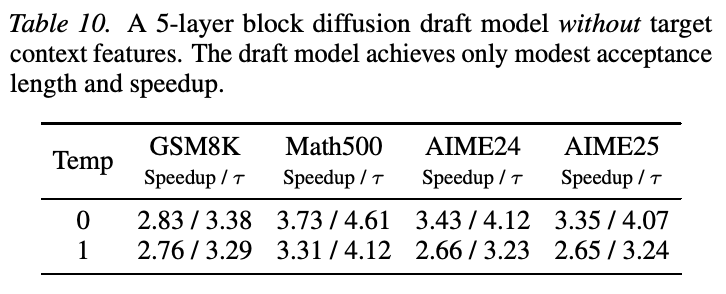
A.3. KV 注入机制与内存开销
DFlash 通过 KV 注入，以目标模型特征为扩散草稿器提供条件。先拼接选定目标层的隐藏状态，再一次性投影到草稿隐藏维度：
\[\mathbf H_t=\operatorname{RMSNorm}\!\left(\mathbf W_c[\mathbf H^{(l_1)};\ldots;\mathbf H^{(l_5)}]\right).\]
投影后的目标特征由全部草稿层共享。在第 \(i\) 层，草稿 token 产生 query，而目标特征与草稿 token 都投影为 key 和 value：
\[\mathbf Q_i=\mathbf W_i^Q\mathbf H_d,\] \[\mathbf K_i=[\mathbf W_i^K\mathbf H_t;\mathbf W_i^K\mathbf H_d]_{\mathrm{seq}},\] \[\mathbf V_i=[\mathbf W_i^V\mathbf H_t;\mathbf W_i^V\mathbf H_d]_{\mathrm{seq}}.\]
因此，目标特征只作为遮蔽块草稿 token 的附加 KV 条目。它们绕过草稿模型的 \(Q\) 投影、输出投影、self-attention 更新及 FFN。
内存开销很小。唯一新增的参数化组件，是共享投影 \(\mathbf W_c\in\mathbb R^{D\times5D}\)。对于 \(D=2048\)、采用 BF16 权重的 Qwen3.5-35B-A3B，新增开销为
\[5\times2048\times2048\times2\approx42\ \mathrm{MB},\]
相比约 70 GB 的目标模型可以忽略。激活开销也较小：batch size 为 1、序列长度 2048 时，投影输入与输出分别约需 40 MB 和 8 MB。块大小为 16 的 decoding 期间，临时激活小于 400 KB。
A.4. 更多模型与 vLLM 上的结果
我们进一步在更多目标模型与推理框架上评估 DFlash。表 11 报告单块 B200、并发数为 8 的 SGLang 结果。每项为接受长度／相对自回归 decoding 的加速比。两者均可用时，DFlash 始终优于原生 MTP，也可扩展至更大的 Qwen3.5、Qwen3-Coder 和 GPT-OSS（Agarwal et al., 2025）模型。
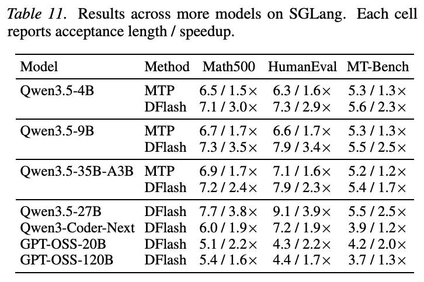
我们还在 vLLM 上评估 Qwen3.5-9B 的 DFlash。表 12 报告不同并发数下的吞吐量及相对自回归 decoding 的加速比。DFlash 在低、中并发时显著加速，在高并发时仍保持吞吐量收益。
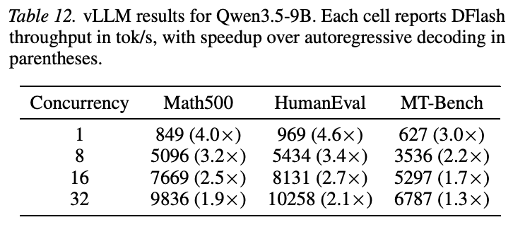
A.5. 进一步消融
A.5.1. 损失衰减
我们对第 4.2 节引入的依赖位置的损失衰减进行消融。具体而言，比较采用指数衰减 token 权重的默认设置，与每个草稿块内采用均匀 token 权重训练的变体。（本句原文跨页，已接续。）
（本页开头关于两种损失权重设置的跨页句已接续至第 12 页。）这一研究单独考察训练期间强调早期 token 准确性的影响。图 5 的结果显示，采用损失衰减能够更快、更好地收敛。
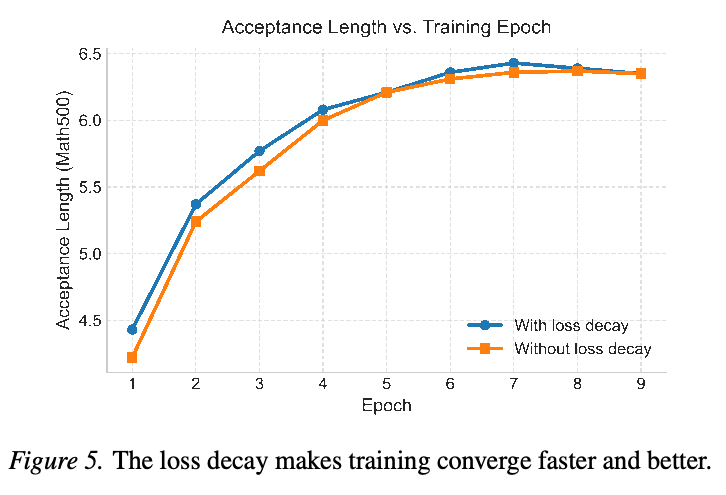
A.5.2. 随机采样遮蔽块
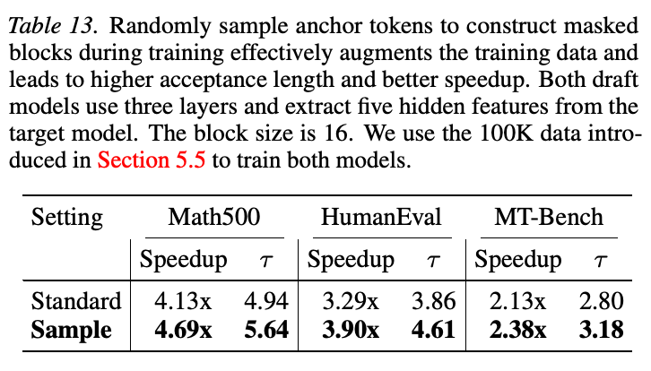